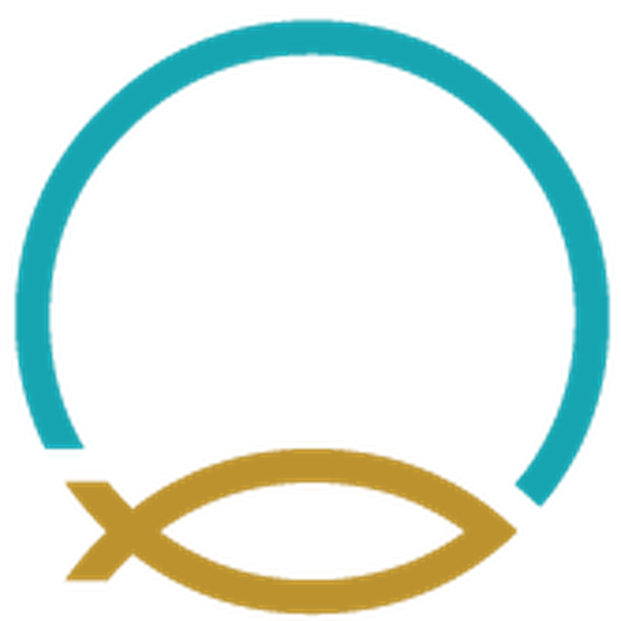
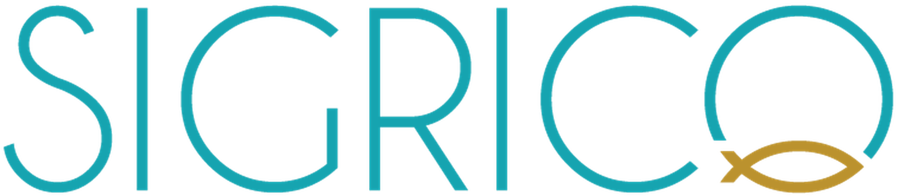

Brand Identity Book · Manual de Identidad
The complete visual and verbal identity system for SigriCo — how our brand looks, speaks and behaves, everywhere.
Everyday Fresh
—Contents · Contenido
01Brand story
La marca · Nacidos del Pacífico abierto
SigriCo is a Mexican company built to raise premium native fish in the open waters of the Pacific — proving that the most responsible protein on earth can also be the most exceptional.
We raise five species native to the Mexican Pacific in submersible ocean cages, far offshore, without antibiotics and with full traceability from cage to plate. Our brand exists to make that difference visible: clean, precise, and unmistakably of the sea.
This book defines how SigriCo looks and sounds — so that every touchpoint, from a business card to the side of a vessel, feels like it came from the same ocean.
SigriCo es una empresa mexicana creada para cultivar peces nativos premium en las aguas abiertas del Pacífico — demostrando que la proteína más responsable del planeta también puede ser la más excepcional.
Cultivamos cinco especies nativas del Pacífico mexicano en jaulas oceánicas sumergibles, mar adentro, sin antibióticos y con trazabilidad completa de la jaula al plato. Nuestra marca existe para hacer visible esa diferencia: limpia, precisa e inconfundiblemente del mar.
Este manual define cómo se ve y cómo habla SigriCo — para que cada punto de contacto, de una tarjeta a un barco, parezca venir del mismo océano.
02Essence & tagline
Esencia · Frescura, todos los días
Everyday Fresh is more than a tagline — it is the promise. Fresh from the ocean, fresh in thinking, fresh every single day. It captures both what we deliver (impeccable, just-harvested fish) and how we work (modern, sustainable, exacting).
Our essence in one line: the freshness of the open ocean, made dependable.
Three words we live by: Native · Responsible · Exceptional.
Everyday Fresh es más que un eslogan — es la promesa. Fresco del océano, fresco en el pensar, fresco cada día. Refleja lo que entregamos (pescado impecable, recién cosechado) y cómo trabajamos (moderno, sustentable, riguroso).
Nuestra esencia en una línea: la frescura del océano abierto, hecha confiable.
Tres palabras que nos guían: Nativo · Responsable · Excepcional.
03The logo
Primary logotype · Logotipo primario
04The mark

El símbolo · Fe y mar
EN — The mark unites two ideas: the open circle of the ocean horizon and the Ichthys fish resting on it — a quiet nod to faith, and to the fish that is our life's work. The circle doubles as the final "O" of the wordmark, so the mark and name are one.
ES — El símbolo une dos ideas: el círculo abierto del horizonte oceánico y el pez Ichthys sobre él — un guiño a la fe y al pez que es nuestro trabajo. El círculo es también la "O" final del logotipo: símbolo y nombre son uno solo.
05Logo variations
Versiones · Para cada fondo

Full color / light bg06Clear space & sizing
Área de respeto & tamaño mínimo
EN — Always keep clear space around the logo equal to the height of the fish mark (x) on all sides. Never crowd it with text, imagery or edges.
ES — Mantén siempre un área de respeto igual a la altura del símbolo (x) en todos los lados. Nunca lo satures con texto, imágenes o bordes.
07Logo misuse
Usos incorrectos · Lo que nunca se hace
Don't rotate or skew. · No girar ni inclinar.
Don't place on clashing colors. · No usar sobre colores que compitan.
Don't stretch or distort. · No deformar.
Don't use color logo on dark. · No usar el logo a color sobre oscuro (usa blanco).
Don't recolor the parts. · No recolorear los elementos.
Don't add effects or shadows. · No agregar efectos ni sombras.
08Primary colors
Color primario · Teal & oro
Teal leads; gold accents. As a rule of thumb, teal carries the brand and gold appears sparingly — the fish, a highlight, a call to action. · El teal lidera; el oro acentúa con moderación.
09Extended palette
Paleta extendida · Profundidades & neutros
10Typography — Primary
Tipografía primaria · Geométrica & clara
11Typography — Accent
Tipografía de acento · Emoción & elegancia
Pair Futura with a single italic Caudex word to add warmth: “Raised in the open ocean”, “The sea, left better”. One accent per headline — no more.
Combina Futura con una sola palabra en Caudex itálica para dar calidez. Un acento por título, no más.
12Photography
Fotografía · Dirección de arte
Imagery lives in deep blues and teals, with real light in real water. Favor the authentic over the staged: offshore cages, fish in motion, the product on ice. Every image is graded dark and cool, then lifted by a single shaft of light or the teal of the sea.
Do — open ocean, submerged cages, schooling fish, cold-chain product, hands at work.
Avoid — bright touristy markets, warm sunsets, mixed proteins, staged studio shots.
La imagen vive en azules y teales profundos, con luz real en agua real. Prioriza lo auténtico sobre lo montado: jaulas mar adentro, peces en movimiento, el producto en hielo. Cada imagen se gradúa oscura y fría, realzada por un haz de luz o el teal del mar.
Sí — océano abierto, jaulas sumergibles, cardúmenes, producto en frío, manos trabajando.
Evitar — mercados turísticos, atardeceres cálidos, proteínas mezcladas, estudio montado.
13Voice & tone
Voz & tono · Claro, sereno, seguro
We say what we mean, plainly. Precision reads as confidence.
The ocean doesn't shout. Short sentences, generous space.
Let the facts and the fish speak. Understatement over hype.
Words we like · Palabras que usamos
Words we avoid: “disruptive”, “world-class”, empty superlatives.
Palabras que evitamos: superlativos vacíos.
14Contact
Everyday Fresh
SIGRICO, S.A.P.I. de C.V.
Juan Salvador Agraz #40 · Piso 5 · Ciudad de México
rzambrano@isuriacorp.com